| The covalent backbone of proteins is made up of hundreds of individual bonds. If free rotation were possible around even a fraction of these bonds, proteins could assume an almost infinite number of threedimensional structures. Each protein has a specific chemical or structural function, however, strongly suggesting that each protein has a unique three-dimensional structure (Fig. 7-1). The simple fact that proteins can be crystallized provides strong evidence that this is the case. The ordered arrays of molecules in a crystal can generally form only if the molecular units making up the crystal are identical. The enzyme urease (Mr 483,000) was among the first proteins crystallized, by James Sumner in 1926. This accomplishment demonstrated dramatically that even very large proteins are discrete chemical entities with unique structures, and it revolutionized thinking about proteins. | 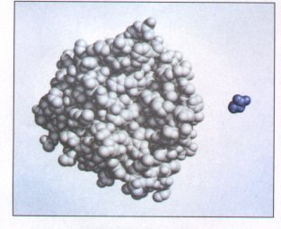 Figure 7-1 The structure of the enzyme chymotrypsin, a globular protein. A molecule of glycine (blue) is shown for size comparison. |
In this chapter, we will explore the three-dimensional structure of proteins, emphasizing several principles. First, the three-dimensional structure of a protein is determined by its amino acid sequence. Second, the function of a protein depends upon its three-dimensional structure. Third, the three-dimensional structure of a protein is unique, or nearly so. Fourth, the most important forces stabilizing the specific three-dimensional structure maintained by a given protein are noncovalent interactions. Finally, even though the structure of proteins is complicated, several common patterns can be recognized.
The relationship between the amino acid sequence and the threedimensional structure of a protein is an intricate puzzle that has yet to be solved in detail. Polypeptides with very different amino acid sequences sometimes assume similar structures, and similar amino acid sequences sometimes yield very different structures. To find and understand patterns in this biochemical labyrinth requires a renewed appreciation for fundamental principles of chemistry and physics.
The spatial arrangement of atoms in a protein is called a conformation. The term conformation refers to a structural state that can, without breaking any covalent bonds, interconvert with other structural states. A change in conformation could occur, for example, by rotation about single bonds. Of the innumerable conformations that are theoretically possible in a protein containing hundreds of single bonds, one generally predominates. This is usually the conformation that is thermodynamically the most stable, having the lowest Gibbs' free energy (G). Proteins in their functional conformation are called native proteins.
What principles determine the most stable conformation of a protein? Although protein structures can seem hopelessly complex, close inspection reveals recurring structural patterns. The patterns involve different levels of structural complexity, and we now turn to a biochemical convention that serves as a framework for much of what follows in this chapter.
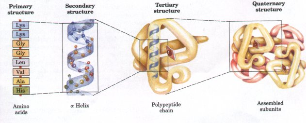
Figure 7-2 Levels of structure in proteins. The primary structure consists of a sequence of amino acids linked together by covalent peptide bonds, and includes any disulfide bonds. The resulting polypeptide can be coiled into an a helix, one form of secondary structure. The helix is a part of the tertiary structure of the folded polypeptide, which is itself one of the subunits that make up the quaternary structure of the multimeric protein, in this case hemoglobin.
Conceptually, protein structure can be considered at four levels (Fig. 7-2). Primary structure includes all the covalent bonds between amino acids and is normally defined by the sequence of peptide-bonded amino acids and locations of disulfide bonds. The relative spatial arrangement of the linked amino acids is unspecified.
Polypeptide chains are not free to take up any three-dimensional structure at random. Steric constraints and many weak interactions stipulate that some arrangements will be more stable than others. Secondary structure refers to regular, recurring arrangements in space of adjacent amino acid residues in a polypeptide chain. There are a few common types of secondary structure, the most prominent being the a helix and the β conformation. Tertiary structure refers to the spatial relationship among all amino acids in a polypeptide; it is the complete three-dimensional structure of the polypeptide. The boundary between secondary and tertiary structure is not always clear. Several different types of secondary structure are often found within the three-dimensional structure of a large protein. Proteins with several polypeptide chains have one more level of structure: quaternary structure, which refers to the spatial relationship of the polypeptides, or subunits, within the protein.
| Continued advances in the understanding of protein structure, folding, and evolution have made it necessary to define two additional structural levels intermediate between secondary and tertiary structure. A stable clustering of several elements of secondary structure is sometimes referred to as supersecondary structure. The term is used to describe particularly stable arrangements that occur in manydifferent proteins and sometimes many times in a single protein. A somewhat higher level of structure is the domain. This refers to a compact region, including perhaps 40 to 400 amino acids, that is a distinct structural unit within a larger polypeptide chain. A polypeptide that is folded into a dumbbell-like shape might be considered to have two domains, one at either end. Many domains fold independently into thermodynamically stable structures. A large polypeptide chain can contain several domains that often are readily distinguishable within the overall structure (Fig. 7-3). In some cases the individual domains have separate functions. As we will see, important patterns exist at each of these levels of structure that provide clues to understanding the overall structure of large proteins. | 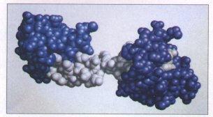 Figure 7-3 The different structural domains in the polypeptide troponin C, a calcium-binding protein associated with muscle. The separate calciumbinding domains, indicated in blue and purple, are connected by a long a helix, shown in white. |
The native conformation of a protein is only marginally stable; the difference in free energy between the folded and unfolded states in typical proteins under physiological conditions is in the range of only 20 to 65 kJ/mol. A given polypeptide chain can theoretically assume countless different conformations, and as a result the unfolded state of a protein is characterized by a high degree of conformational entropy. This entropy, and the hydrogen-bonding interactions of many groups in the polypeptide chain with solvent (water), tend to maintain the unfolded state. The chemical interactions that counteract these effects and stabilize the native conformation include disulfide bonds and the weak (noncovalent) interactions described in Chapter 4: hydrogen bonds, and hydrophobic, ionic, and van der Waals interactions. An appreciation of the role of these weak interactions is especially important to understanding how polypeptide chains fold into specific secondary, tertiary, and quaternary structures.
Every time a bond is formed between two atoms, some free energy is released in the form of heat or entropy. In other words, the formation of bonds is accompanied by a favorable (negative) change in free energy. The ΔG for covalent bond formation is generally in the range of -200 to -460 kJ/mol. For weak interactions, ΔG = -4 to -30 kJ/mol. Although covalent bonds are clearly much stronger, weak interactions predominate as a stabilizing force in protein structure because of their number. In general, the protein conformation with the lowest free energy (i.e., the most stable) is the one with the maximum number of weak interactions.
The stability of a protein is not simply the sum of the free energies of formation of the many weak interactions within it, however. We have already noted that the stability of proteins is marginal. Every hydrogen-bonding group in a polypeptide chain was hydrogen bonded to water prior to folding. For every hydrogen bond formed in a protein, hydrogen bonds (of similar strength) between the same groups and water were broken. The net stability contributed by a given weak interaction, or the difference in free energies of the folded and unfolded state, is close to zero. We must therefore explain why the native conformation of a protein is favored. The contribution of weak interactions to protein stability can be understood in terms of the properties of water (Chapter 4). Pure water contains a network of hydrogen-bonded water molecules. No other molecule has the hydrogen-bonding potential of water, and other molecules present in an aqueous solution will disruptthe hydrogen bonding of water to some extent. Optimizing the hydrogen bonding of water around a hydrophobic molecule results in the formation of a highly structured shell or solvation layer of water in the immediate vicinity, resulting in an unfavorable decrease in the entropy of water. The association among hydrophobic or nonpolar groups results in a decrease in this structured solvation layer, or a favorable increase in entropy. As described in Chapter 4, this entropy term is the major thermodynamic driving force for the association of' hydrophobic groups in aqueous solution, and hydrophobic amino acid side chains therefore tend to be clustered in a protein's interior, away from water.
The formation of hydrogen bonds and ionic interactions in a protein is also driven largely by this same entropic effect. Polar groups can generally form hydrogen bonds with water and hence are soluble in water. However, the number of hydrogen bonds per unit mass is generally greater for pure water than for any other liquid or solution, and there are limits to the solubility of even the most polar molecules because of the net decrease in hydrogen bonding that occurs when they are present. Therefore, a solvation shell of structured water will also form to some extent around polar molecules. Even though the energy of formation of an intramolecular hydrogen bond or ionic interaction between two polar groups in a macromolecule is largely canceled out by the elimination of such interactions between the same groups and water, the release of structured water when the intramolecular interaction is formed provides an entropic driving force for folding. Most of the net change in free energy that occurs when weak interactions are formed within a protein is therefore derived from the increase in entropy in the surrounding aqueous solution.
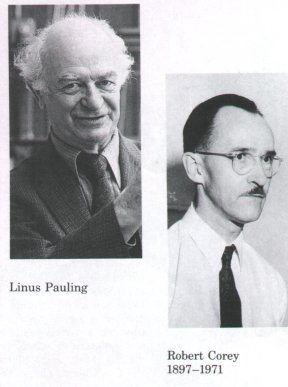
Of the different types of weak interactions, hydrophobic interactions are particularly important in stabilizing a protein conformation; the interior of a protein is generally a densely packed core of hydrophobic amino acid side chains. It is also important that any polar or charged groups in the protein interior have suitable partners for hydrogen bonding or ionic interactions. One hydrogen bond makes only a small apparent contribution to the stability of a native structure, but the presence of a single hydrogen-bonding group without a partner in the hydrophobic core of a protein can be so destabilizing that conformations containing such a group are often thermodynamically untenable.Most of the structural patterns outlined in this chapter reflect these two simple rules: (1) hydrophobic residues must be buried in the protein interior and away from water, and (2) the number of hydrogen bonds must be maximized. Insoluble proteins and proteins within membranes (Chapter 10) follow somewhat different rules because of their function or their environment, but weak interactions are still critical structural elements.
Several types of secondary structure are particularly stable and occur widely in proteins. The most prominent are the α helix and β conformations described below. Using fundamental chemical principles and a few experimental observations, Linus Pauling and Robert Corey predicted the existence of these secondary structures in 1951, several years before the first complete protein structure was elucidated.
In considering secondary structure, it is useful to classify proteins into two major groups: fibrous proteins, having polypeptide chains arranged in long strands or sheets, and globular proteins, with polypeptide chains folded into a spherical or globular shape. Fibrous proteins play important structural roles in the anatomy and physiology of vertebrates, providing external protection, support, shape, and form. They may constitute one-half or more of the total body protein in larger animals. Most enzymes and peptide hormones are globular proteins. Globular proteins tend to be structurally complex, often containing several types of secondary structure; fibrous proteins usually consist largely of a single type of secondary structure. Because of this structural simplicity, certain fibrous proteins played a key role in the development of the modern understanding of protein structure and provide particularly clear examples of the relationship between structure and function; they are considered in some detail after the general discussion of secondary structure.
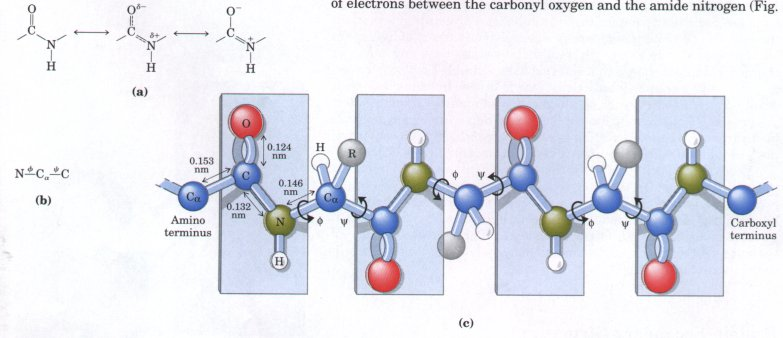
Figure 7-4 (a) The planar peptide group. Each peptide bond has some double-bond character due to resonance and cannot rotate. The carbonyl oxygen has a partial negative charge and the amide nitrogen a partial positive charge, setting up a small electric dipole. Note that the oxygen and hydrogen atoms in the plane are on opposite sides of the C-N bond. This is the trans configuration. Virtually all peptide bonds in proteins occur in thisconfiguration, although an exception is noted in Fig. 7-10. (b) Three bonds separate sequential Cα carbons in a polypeptide chain. The N-Cα and Cα-C bonds can rotate, with bond angles designated φ and ψ, respectively. (c) Limited rotation can occur around two of the three types of bonds in a polypeptide chain. The C-N bonds in the planar peptide groups (shaded in blue), which make up one-third of all the backbone bonds, are not free torotate. Other single bonds in the backbone may also be rotationally hindered, depending on the size and charge of the R groups.
| Pauling and Corey began their work on
protein structure in the late 1930s by first focusing on
the structure of the peptide bond. The a carbons of
adjacent amino acids are separated by three covalent
bonds, arranged Cα-C-N-Cα. X-ray diffraction studies of
crystals of amino acids and of simple dipeptides and
tripeptides demonstrated that the amide C-N bond in a
peptide is somewhat shorter than the C-N bond in a simple
amine and that the atoms associated with the bond are
coplanar. This indicated a resonance or partial sharing
of two pairs of electrons between the carbonyl oxygen and
the amide nitrogen (Fig.7-4a). The oxygen has a partial
negative charge and the nitrogen a partial positive
charge, setting up a small electric dipole. The four
atoms of the peptide group lie in a single plane, in such
a way that the oxygen atom of the carbonyl group and the
hydrogen atom of the amide nitrogen are trans to each
other. From these studies Pauling and Corey concluded
that the amide C-N bonds are unable to rotate freely
because of their partial double-bond character. The
backbone of a polypeptide chain can thus be pictured as a
series of rigid planes separated by substituted methylene
groups, -CH(R)- (Fig. 7-4c). The rigid peptide bonds
limit the number of conformations that can be assumed by
a polypeptide chain. Rotation is permitted about the N-Cα and the Cα-C bonds. By convention the bond angles resulting from rotations are labeled φ (phi) for the N-Cα, bond and ψ (psi) for the Cα-C bond. Again by convention, both φ and ψare defined as 0°in the conformation in which the two peptide bonds connected to a single a carbon are in the same plane, as shown in Figure 7-4d. In principle, φ and ψ can have any value between -180°and +180° but many values of φ and ψ are prohibited by steric interference between atoms in the polypeptide backbone and amino acid side chains. The conformation in which φ and ψ are both 0°is prohibited for this reason; this is used merely as a reference point for describing the angles of rotation. |
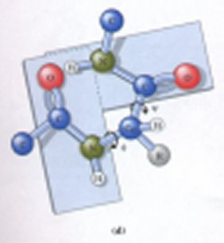 Figure 7-4 (d) By convention, φ and ψ are both defined as 0°when the two peptide bonds flanking an α carbon are in the same plane. In a protein, this conformation is prohibited by steric overlap between a carbonyl oxygen and an a-amino hydrogen atom. 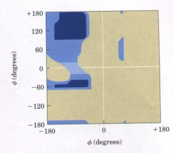 Figure 7-5 A Ramachandran plot. The theoretically allowed conformations of peptides are shown, defined by the values of φ and ψ. The shaded areas reflect conformations that can be take up by all amino acids (dark shading) or all except valine and isoleucine (medium shading); the lightest shading reflects conformations that are somewhat unstable but are found in some protein structures. |
Every possible secondary structure is described completely by the two bond angles φ and ψ that are repeated at each residue. Allowed values for φ and ψ can be shown graphically by simply plotting φ versus ψ, an arrangement known as a Ramachandran plot. The Ramachandran plot in Figure 7-5 shows the conformations permitted for most amino acid residues.
Pauling and Corey were aware of the importance of hydrogen bonds in orienting polar chemical groups such as the -C=O and -N-H groups of the peptide bond. They also had the experimental results of William Astbury, who in the 1930s had conducted pioneering x-ray studies of proteins. Astbury demonstrated that the protein that makes up hair and wool (the fibrous protein α-keratin) has a regular structure that repeats every 0.54 nm. With this information and their data on the peptide bond, and with the help of precisely constructed models, Pauling and Corey set out to determine the likely conformations of protein molecules.
The simplest arrangement the polypeptide chain could assume with its rigid peptide bonds (but with the other single bonds free to rotate) is a helical structure, which Pauling and Corey called the α helix (Fig. 7-6). In this structure the polypeptide backbone is tightly wound around the long axis of the molecule, and the R groups of the amino acid residues protrude outward from the helical backbone. The repeating unit is a single turn of the helix, which extends about 0.56 nm along the long axis, corresponding closely to the periodicity
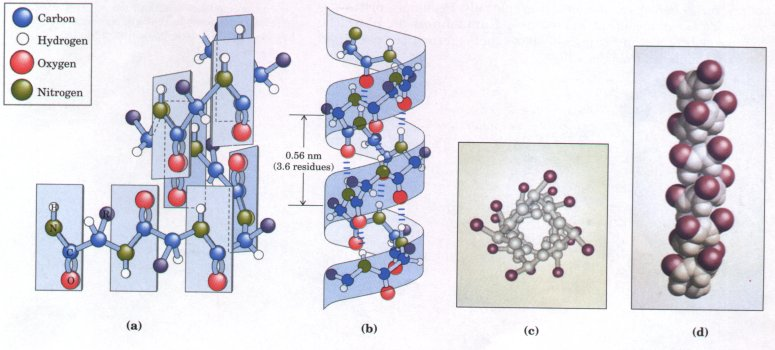 Figure 7-6 Four models of the a helix, showing different aspects of its structure. (a) Formation of a right-handed α helix. The planes of the rigid peptide bonds are parallel to the long axis of the helix. (b) Ball-and-stick model of a right-handed α helix, showing the intrachain hydrogen bonds. The repeat unit is a single turn of the helix, 3.6 residues.(c) The α helix as viewed from one end, looking down the longitudinal axis. Note the positions of the R groups, represented by red spheres. (d) A space-filling model of the α helix. |
|
Astbury observed on x-ray analysis of hair keratin. The amino acid residues in an a helix have conformations with ψ = -45°to -50°and φ = -60° and each helical turn includes 3.6 amino acids. The twisting of the helix has a right-handed sense (Box 7-1) in the most common form of the α helix, although a very few left-handed variants have been observed.
The α helix is one of two prominent types of secondary structure in proteins. It is the predominant structure in α-keratins. In globular proteins, about one-fourth of all amino acid residues are found in α helices, the fraction varying greatly from one protein to the next.
Why does such a helix form more readily than many other possible conformations? The answer is, in part, that it makes optimal use of internal hydrogen bonds. The structure is stabilized by a hydrogen bond between the hydrogen atom attached to the electronegative nitrogen atom of each peptide linkage and the electronegative carbonyl oxygen atom of the fourth amino acid on the amino-terminal side of it in the helix (Fig. 7-6b). Every peptide bond of the chain participates in such hydrogen bonding. Each successive coil of the α helix is held to the adjacent coils by several hydrogen bonds, which in summation give the entire structure considerable stability.
Further model-building experiments have shown that an α helix can form with either L- or D-amino acids. However, all residues must be of one stereoisomeric series; a D-amino acid will disrupt a regular structure consisting of L-amino acids, and vice versa. Naturally occurring L-amino acids can form either right- or left-handed helices, but, with rare exceptions, only right-handed helices are found in proteins.
| Not all polypeptides can form a stable α
helix. Additional interactions occur between amino acid
side chains that can stabilize or destabilize this
structure. For example, if a polypeptide chain has many
Glu residues in a long block, this segment of the chain
will not form an α helix at pH 7.0. The negatively
charged carboxyl groups of adjacent Glu residues repel
each other so strongly that they overcome the stabilizing
influence of hydrogen bonds on the α helix. For the same
reason, if there are many adjacent Lys and/or Arg
residues, with positively charged R groups at pH 7.0,
they will also repel each other and prevent formation of
the α helix. The bulk and shape of certain R groups can
also destabilize the α helix or prevent its formation.
For example, Asn, Ser, Thr, and Leu residues tend to
prevent formation of the α helix if they occur close
together in the chain. The twist of an α helix ensures that critical interactions occur between an amino acid side chain and the side chain three (and sometimes four) residues away on either side of it (Fig. 7-7). Positively charged amino acids are often found three residues away from negatively charged amino acids, permitting the formation of an ionic interaction. Two aromatic amino acids are often similarly spaced, resulting in a hydrophobic interaction. A minor constraint on the formation of the α helix is the presence of Pro residues. In proline the nitrogen atom is part of a rigid ring (Fig. 5-6), and rotation about the N-Cα bond is not possible. In addition, the nitrogen atom of a Pro residue in peptide linkage has no substituent hydrogen-to-hydrogen bond with other residues. For these reasons, proline is only rarely found within an α helix. |
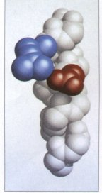 Figure 7-7 Interactions between R groups of amino acids three residues apart in an α helix. An ionic interaction between Asp100 and Arg103 in an α-helical region of the protein troponin C is shown in this space-filling model. The polypeptide backbone (carbons, α-amino nitrogens, and a-carbonyl oxygens) is shown in white for a helix segment about 12 amino acids long. The 7only side chains shown are the interacting Asp and Arg residues, with the aspartate in red and the arginine in blue. The side chain interaction illustrated occurs within the white connecting helix in Fig. 7-3. |
| A final factor affecting the stability
of an α helix is the identity of the amino acids located
near the ends of the α-helical segment of a polypeptide.
A small electric dipole exists in each peptide bond (see
Fig. 7-4). These dipoles add across the hydrogen bonds in
the helix so that the net dipole increases as helix
length increases (Fig. 7-8). The four amino acids at
either end of the helix do not participate fully in the
helix hydrogen bonds. The partial positive and negative
charges of the helix dipole actually reside on the
peptide amino and carbonyl groups near the amino-terminal
and carboxyl-terminal ends of the helix, respectively.
For this reason, negatively charged amino acids are often
found near the amino terminus of the helical segment,
where they have a stabilizing interaction with the
positive charge of the helix dipole; a positively charged
amino acid at the amino-terminal end is destabilizing.
The opposite is true at the carboxyl-terminal end of the
helical segment. Thus there are five different kinds of constraints that affect the stability of an α helix: (1) the electrostatic repulsion (or attraction) between amino acid residues with charged R groups, (2) the bulkiness of adjacent R groups, (3) the interactions between amino acid side chains spaced three (or four) residues apart, (4) the occurrence of Pro residues, and (5) the interaction between amino acids at the ends of the helix and the electric dipole inherent to this structure. |
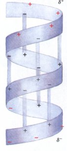 Figure 7-8 The electric dipole of a peptide bond (Fig. 7-4a) is transmitted along an α-helical segment through the intrachain hydrogen bonds, resulting in an overall helix dipole. In this illustration, the amino and carbonyl constituents of each peptide bond are indicated by + and - symbols, respectively. Unbonded amino and carbonyl constituents in the peptide bonds near either end of the α-helical region are shown in red. |
Pauling and Corey predicted a second type of repetitive structure, the β conformation. This is the more extended conformation of the polypeptide chains, as seen in the silk protein fibroin (a member of a class of fibrous proteins called β-keratins), and its structure has been confirmed by x-ray analysis. In the β conformation, which like the α helix is common in proteins, the backbone of the polypeptide chain is extended into a zigzag rather than helical structure (Fig. 7-9). In fibroin the zigzag polypeptide chains are arranged side by side to form a structure resembling a series of pleats; such a structure is called a β pleated sheet. In the β conformation the hydrogen bonds can be either intrachain, or interchain between the peptide linkages of adjacent polypeptide chains. All the peptide linkages of β-keratin participate in interchain hydrogen bonding. The R groups of adjacent amino acids protrude in opposite directions from the zigzag structure, creating an alternating pattern as seen in the side view (Fig. 7-9c).
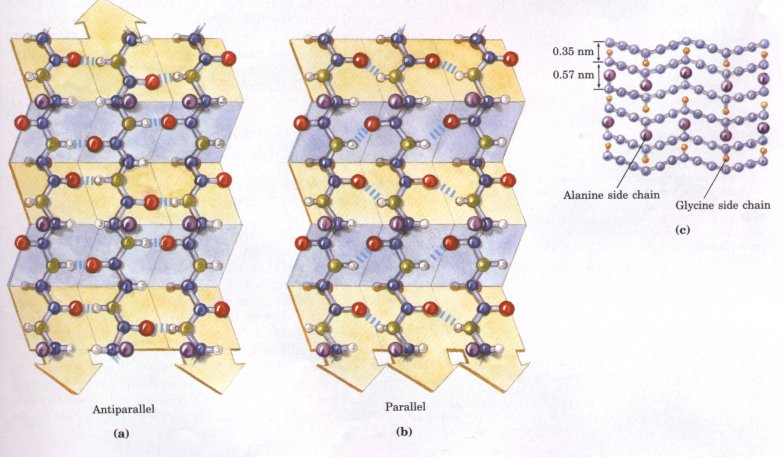
Figure 7-9 The β conformation of polypeptide chains. Views show the R groups extending out from the β pleated sheet and emphasize the pleated sheet described by the planes of the peptide bonds. Hydrogen-bond cross-links between adjacent chains are also shown. (a) Antiparallel β sheets, in which the amino-terminal to carboxyl-terminal orientation of adjacent chains (arrows) is inverse. (b) Parallel β sheets. (c) Silk fibers are made up of the protein fibroin. Its structure consists of layers of antiparallel β sheets rich in Ala (purple) and Gly (yellow) residues. The small side chains interdigitate and allow close packing of each layered sheet, as shown in this side view.
The adjacent polypeptide chains in a β pleated sheet can be either parallel (having the same amino-to-carboxyl polypeptide orientation) or antiparallel (having the opposite amino-to-carboxyl orientation). The structures are similar, although the repeat period is shorter for the parallel conformation (0.65 nm, as opposed to 0.7 nm for antiparallel).
In some structural situations there are limitations to the kinds of amino acids that can occur in the β structure. When two or more pleated sheets are layered closely together within a protein, the R groups of the amino acid residues on the contact surfaces must be relatively small. β-Keratins such as silk fibroin and the protein of spider webs have a very high content of Gly and Ala residues, those with the smallest R groups. Indeed, in silk fibroin Gly and Ala alternate over large parts of the sequence (Fig. 7-9c).
| The α helix and the β conformation are the major repetitive secondary structures easily recognized in a wide variety of proteins. Other repetitive structures exist, often in only one or a few specialized proteins. An example is the collagen helix (see Fig. 7-14). One other type of secondary structure is common enough to deserve special mention. This is a β bend or β turn (Fig. 7-10), often found where a polypeptide chain abruptly reverses direction. (These turns often connect the ends of two adjacent segments of an antiparallel β pleated sheet, hence the name.) The structure is a tight turn (~180°) involving four amino acids. The peptide groups flanking the first amino acid are hydrogen bonded to the peptide groups flanking the fourth. Gly and Pro residues often occur in β turns, the former because it is small and flexible; and the latter because peptide bonds involving the imino nitrogen of proline readily assume the cis configuration (Fig. 7-l0b), a form that is particularly amenable to a tight turn. β Turns are often found near the surface of a protein. | 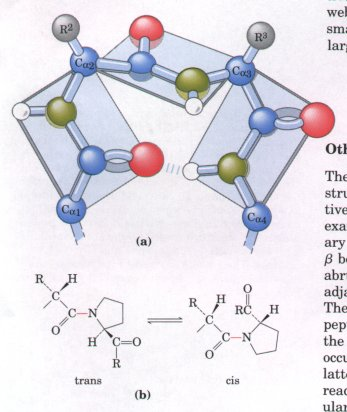 Figure 7-10 Structure of a β turn or β bend. (a) Note the hydrogen bond between the peptide groups of the first and fourth residues involved in the bend. (b) The trans and cis isomers of a peptide bond involving the imino nitrogen of proline. Over 99.95% of the peptide bonds between amino acid residues other than Pro are in the trans configuration. About 6% of the peptide bonds involving the imino nitrogen of proline, however, are in the cis configuration, and many of these occur at β turns. |
The α helix and β conformation are stable because steric repulsion is minimized and hydrogen bonding is maximized. As shown by a Ramachandran plot, these structures fall within a range of sterically allowed structures that is relatively restricted. Values of φ and ψ for common secondary structures are shown in Figure 7-11. Most values of φ and ψ for amino acid residues, taken from known protein structures, fall into the expected regions, with high concentrations near the α helix and β conformation values as expected. The only amino acid often found in a conformation outside these regions is glycine. Because its hydrogen side chain is small, a Gly residue can take up many conformations that are sterically forbidden for other amino acids.
Some amino acids are accommodated in the different types of secondary structures better than others. An overall summary is presented in Figure 7-12. Some biases, such as the presence of Pro and Gly residues in β turns, can be explained readily; other evident biases are not understood.
Figure 7-11 A Ramachandran plot. The values of φ and ψ for the various secondary structures are overlaid on the plot from Fig. 7-5. |
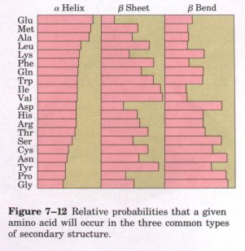 Figure 7-12 Relative probabilities that a given amino acid will occur in the three common types of secondary structure. |
α-Keratin, collagen, and elastin provide clear examples of the relationship between protein structure and biological function (Table 7-1). These proteins share properties that give strength and/or elasticity to structures in which they occur. They have relatively simple structures, and all are insoluble in water, a property conferred by a high concentration of hydrophobic amino acids both in the interior of the protein and on the surface. These proteins represent an exception to the rule that hydrophobic groups must be buried. The hydrophobic core of the molecule therefore contributes less to structural stability, and covalent bonds assume an especially important role. |
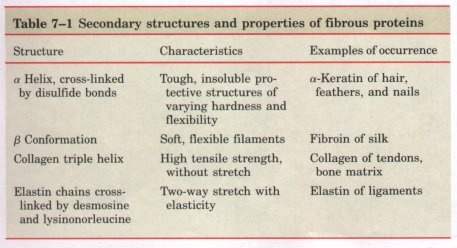 |
| α-Keratin and collagen
have evolved for strength. In vertebrates, α-keratins
constitute almost the entire dry weight of hair, wool,
feathers, nails, claws, quills, scales, horns, hooves,
tortoise shell, and much of the outer layer of skin.
Collagen is found in connective tissue such as tendons,
cartilage, the organic matrix of bones, and the cornea of
the eye. The polypeptide chains of both proteins have
simple helical structures. The α-keratin helix is the
right-handed α helix found in many other proteins (Fig.
7-13). However, the collagen helix is unique. It is
left-handed (see Box 7-1) and has three amino acid
residues per turn (Fig. 7-14). In both α-keratin and
collagen, a few amino acids predominate. α-Keratin is
rich in the hydrophobic residues Phe, Ile, Val, Met, and
Ala. Collagen is 35% Gly, 11% Ala, and 21% Pro and Hyp
(hydroxyproline; see Fig. 5-8). The unusual amino acid
content of collagen is imposed by structural constraints
unique to the collagen helix. The amino acid sequence in
collagen is generally a repeating tripeptide unit,
Gly-X-Pro or Gly-X-Hyp, where X can be any amino acid.
The food product gelatin is derived from collagen.
Although it is protein, it has little nutritional value
because collagen lacks significant amounts of many amino
acids that are essential in the human diet. In both α-keratin and collagen, strength is amplified by wrapping multiple helical strands together in a superhelix, much the way strings are twisted to make a strong rope (Figs. 7-13, 7-14). In both proteins the helical path of the supertwists is opposite in sense to the twisting of the individual polypeptide helices, a conformation that permits the closest possible packing of the multiple polypeptide chains. The superhelical twisting is probably left-handed in α-keratin (Fig. 7-13) and right-handed in collagen (Fig. 7-14). The tight wrapping of the collagen triple helix provides great tensile strength with no capacity to stretch: Collagen fibers can support up to 10,000 times their own weight and are said to have greater tensile strength than a steel wire of equal cross section. |
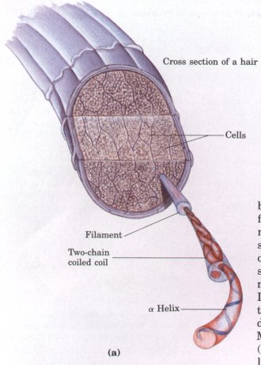 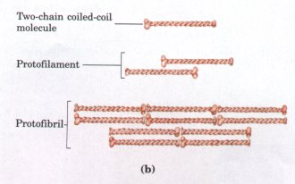 Figure 7-13 (a) Hair α-keratin is an elongated aα helix with somewhat thicker domains near the amino and carboxy termini. Pairs of these helices are interwound, probably in a left-handed sense, to form two-chain coiled coils. These then combine in higher-order structures called protofilaments and protofibrils, as shown in (b). (About four protofibrils combine to form a filament.) The individual two-chain coiled coils in the various substructures also appear to be interwound, but the handedness of the interwinding and other structural details are unknown. |
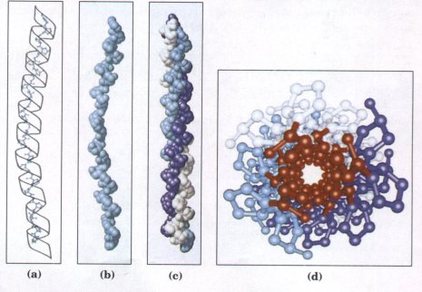
Figure 7-14 Structure of collagen. The collagen helix is a repeating secondary structure unique to this protein. (a) The repeating tripeptide sequence Gly-X-Pro or Gly-X-Hyp adopts a left-handed helical structure with three residues per turn. The repeating sequence used to generate this model is Gly-Pro-Hyp. (b) Space-filling model of the collagen helix shown in (a). (c) Three of these helices wrap around one another with a right-handed twist. The resulting three-stranded molecule is referred to as tropocollagen (see Fig. 7-15). (d) The three-stranded collagen superhelix shown from one end, in a ball-and-stick representation. Glycine residues are shown in red. Glycine, because of its small size, is required at the tight junction where the three chains are in contact.
BOX 7-2 Permanent Waving Is Biochemical Engineering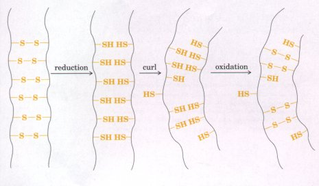 α-Keratins exposed to moist heat can be stretched into the β conformation, but on cooling revert to the α-helical conformation spontaneously. This is because the R groups of α-keratins are larger on average than those of β-keratins and thus are not compatible with a stable β conformation. This characteristic of α-keratins, as well as their content of disulfide cross-linkages, is the basis of permanent waving. The hair to be waved is first bent around a form of appropriate shape. A solution of a reducing agent, usually a compound containing a thiol or sulfhydryl group (-SH), is then applied with heat. The reducing agent cleaves the disulfide cross-linkages by reducing each cystine to two cysteine residues, one in each adjacent chain. The moist heat breaks hydrogen bonds and causes the α-helical structure of the polypeptide chains to uncoil and stretch. After a time the reducing solution is removed, and an oxidizing agent is added to establish new disulfide bonds between pairs of Cys residues of adjacent polypeptide chains, but not the same pairs that existed before the treatment. On washing and cooling the hair, the polypeptide chains revert to their α-helical conformation. The hair fibers now curl in the desired fashion because new disulfide cross-linkages have been formed where they will exert some torsion or twist on the bundles of α-helical coils in the hair fibers. |
The strength of these structures is also enhanced by covalent cross-links between polypeptide chains within the multi-helical "ropes" and between adjacent ones. In α-keratin, the cross-links are contributed by disulfide bonds (Box 7-2). In the hardest and toughest α-keratins, such as those of tortoise shells and rhinoceros horns, up to 18% of the residues are cysteines involved in disulfide bonds. The arrangement of α-keratin to form a hair fiber is shown in Figure 7-13. In collagen, the cross-links are contributed by an unusual type of covalent link between two Lys residues that creates a nonstandard amino acid residue called lysinonorleucine, found only in certain fibrous proteins.
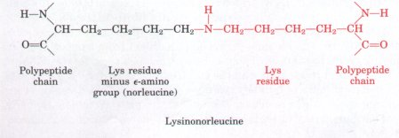 Collagen fibrils consist of recurring three-stranded polypeptide units called tropocollagen, arranged head to tail in parallel bundles (Fig. 7-15). The rigid, brittle character of the connective tissue in older people is the result of an accumulation of covalent cross-links in collagen as we age.Human genetic defects involving collagen illustrate the close relationship between amino acid sequence and three-dimensional structure in this protein. Osteogenesis imperfecta results in abnormal bone formation in human babies. Ehlers-Danlos syndrome is characterized by loose joints. Both can be lethal and both result from the substitution of a Cys or Ser residue, respectively, for a Gly (a different Gly residue in each case) in the amino acid sequence of collagen. These seemingly small substitutions have a catastrophic effect on collagen function because they disrupt the Gly-X-Pro repeat that gives collagen its unique helical structure. Elastic connective tissue contains the fibrous protein elastin, which resembles collagen in some of its properties but is very different in others. The polypeptide subunit of elastin fibrils is tropoelastin (Mr72,000), containing about 800 amino acid residues. Like collagen, it is rich in Gly and Ala residues. Tropoelastin differs from tropocollagen in having many Lys but few Pro residues; it forms a special type of helix, different from the a helix and the collagen helix. Tropoelastin consists of lengths of helix rich in Gly residues separated by short regions containing Lys and Ala residues. The helical portions stretch on applying tension but revert to their original length when tension is released. The regions containing Lys residues form covalent cross-links. Four Lys side chains come together and are enzymatically converted into desmosine (see Fig. 5-8) and a related compound, isodesmosine; these amino acids are found only in elastin. Lysinonorleucine (p. 173) also occurs in elastin. These nonstandard amino acids are capable ofjoining tropoelastin chains into arrays that can be stretched reversibly in all directions (Fig. 7-16). Figure 7-16 Tropoelastin molecules and their linkage to form a network of polypeptide chains in elastin. Elastin consists of tropoelastin molecules cross-linked to give two-dimensional or threedimensional elasticity. In addition to desmosine residues (in red), which can link two, three, or four tropoelastin molecules, as shown, elastin contains other kinds of cross-linkages, such as lysinonorleucine, also designated in red. |
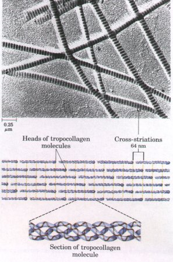 Figure 7-15 The structure ot conagen naers. uropocollagen (Mr 300,000) is a rod-shaped molecule, about 300 nm long and only 1.5 nm thick. The three helically intertwined polypeptides are of equal length, each having about 1,000 amino acid residues. In some collagens all three chains are identical in amino acid sequence, but in others two chains are identical and the third differs. The heads of adjacent molecules are staggered, and the alignment of the head groups of every fourth molecule produces characteristic cross-striations 64 nm apart that are evident in an electron micrograph. 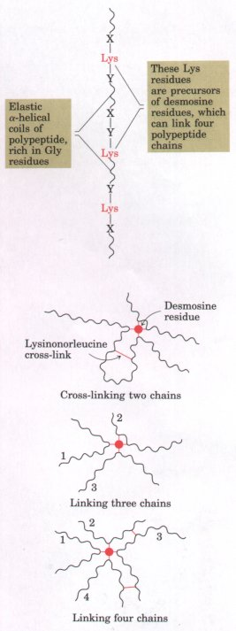 |